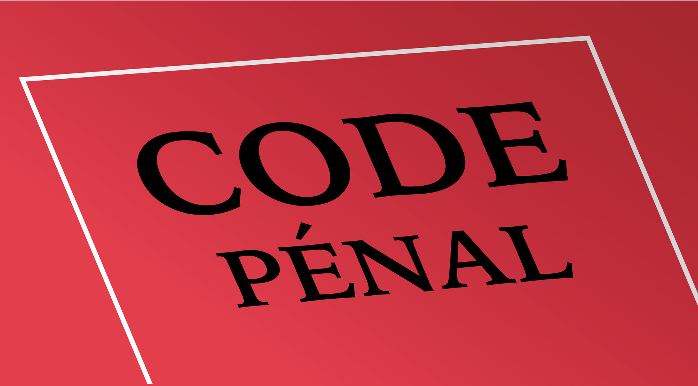
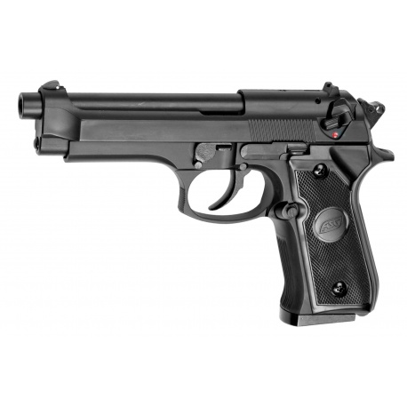
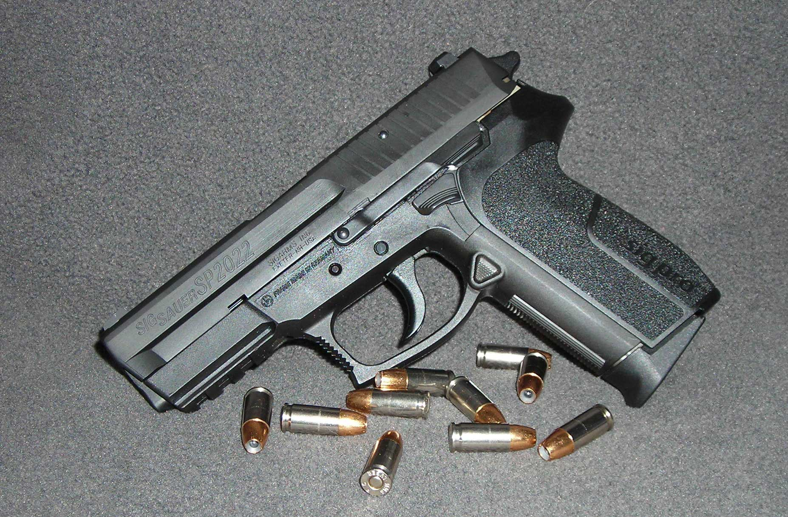

Articles du Code Pénal

Article 122-5 : La légitime défense
« N'est pas pénalement responsable, la personne qui, devant une atteinte injustifiée envers elle-même ou autrui, accomplit, dans le même temps, un acte commandé par la nécessité de la légitime défense, sauf s'il y a disproportion entre les moyens de défense employés et la gravité de l'atteinte. »
Pour que les conditions légales de la légitime défense soient respectées, il faut que :-
L'agression soit :
- Actuelle
- Injuste
- Dirigée contre soi-même ou autrui
-
La riposte soit :
- Simultanée
- Proportionnée
- Nécessaire
Article 122-7 : L'état de nécessité
« N'est pas pénalement responsable la personne qui, face à un danger actuel ou imminent qui menace elle-même, autrui ou un bien, accomplit un acte nécessaire à la sauvegarde de la personne ou du bien, sauf s'il y a disproportion entre les moyens employés et la gravité de la menace. »
Article du Code de la Sécurité Intérieure

Article 435-1
Les militaires de la gendarmerie nationale peuvent faire usage de leurs armes en cas d'absolue nécessité et de manière strictement proportionnée :
- Lorsqu'il y a atteinte à la vie ou à l'intégrité physique contre eux-même ou autrui
-
Lorsqu'ils ne peuvent défendre autrement :
- Les lieux qu'ils occupent
- Les personnes qui leur sont confiées
- Lorsqu'ils ne peuvent arrêter autrement les personnes qui cherchent à échapper à leur garde
- Lorsqu'ils ne peuvent immobiliser autrement des véhicules ou moyens de transport dont les conducteurs n'obtempèrent pas à l'orde d'arrêt
- Pour empêcher la réitération d'un ou plusieurs meurtres ou tentatives de meurtre
Règles lors de l'usage d'une arme


Lors de l'usage d'une arme à feu, afin de rester en sécurité, il est primordiale de respecter les 5 règles suivantes :
- Une arme doit toujours être considérée comme étant chargée
- La manipulation d'une arme est, par principe, exclusive de toute autre action executée de façon simultanée
- Une arme ne doit être pointée ou laisser pointée que vers un objectif représentant une menace, clairement identifiée et isolée de son environnement
- L'arme doit être maintenue en position de contact tant que la décision de tirer n'est pas prise
- Les opérations de sécurité doivent être effectuées sans délais aux départ et au retour de service ainsi qu'à l'issu d'un tir